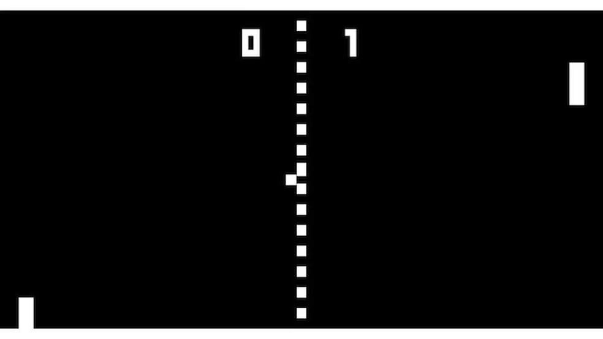

1. ENIAC e as Mulheres Programadoras:
O ENIAC, um dos primeiros computadores digitais eletrônicos, foi programado por seis mulheres. Suas contribuições foram amplamente ignoradas por décadas até que sua história começou a ser reconhecida mais tarde.

2. A Primeira Linguagem de Programação:
A linguagem COBOL, criada em 1959, foi uma das primeiras linguagens de programação de alto nível e ainda é usada em sistemas legados em muitas indústrias.
3. O Primeiro E-mail:
Em 1971, Ray Tomlinson enviou o primeiro e-mail da história. Ele escolheu o símbolo "@" para separar o nome do usuário do nome do computador, uma decisão que perdura até hoje.

4. Os Primeiros Sites da Web:
O primeiro site da World Wide Web foi lançado em 1991 por Tim Berners-Lee. Ele continha informações sobre o próprio projeto da WWW e como os usuários poderiam criar suas próprias páginas.
5. A Evolução dos Disquetes:
Os primeiros disquetes tinham apenas 8 polegadas de diâmetro, enquanto os mais comuns, de 5,25 polegadas, se popularizaram na década de 1980. Os disquetes de 3,5 polegadas, introduzidos nos anos 80, foram amplamente utilizados até o início dos anos 2000.
6. O Primeiro Vírus de Computador:
O primeiro vírus de computador conhecido foi o Creeper, criado em 1971. Não era malicioso, mas se replicava e exibia a mensagem "I'm the creeper, catch me if you can!" (Eu sou o creeper, me pegue se puder!).
7. A Revolução dos Video Games:
O primeiro jogo de computador foi criado por William Higinbotham em 1958. "Tennis for Two" simulava um jogo de tênis e rodava em um osciloscópio.
8. O Primeiro Computador Pessoal:
O Altair 8800, lançado em 1975, foi um dos primeiros computadores pessoais disponíveis comercialmente. Ele inspirou muitos entusiastas a experimentar programação e eletrônica.

9.A Origem do Mouse:
O mouse foi inventado por Douglas Engelbart em 1964. Ele foi feito de madeira e tinha duas rodas que giravam em direções perpendiculares.
10.O Grande Apagão de 2003:
Um apagão de energia em 2003 causou a interrupção de serviços em várias cidades da Costa Leste dos EUA e Canadá, incluindo problemas de rede que afetaram sistemas de telecomunicações e infraestrutura crítica.
11.O Primeiro Smartphone:
O IBM Simon, lançado em 1994, foi o primeiro dispositivo a ser chamado de "smartphone". Ele combinava funções de telefone e PDA (Assistente Pessoal Digital).
12.O Y2K Bug:
No final dos anos 90, muitos temiam que o "bug do milênio" (Y2K) causaria falhas catastróficas em computadores e sistemas automatizados devido à mudança de data de 1999 para 2000. Precauções foram tomadas em todo o mundo para mitigar potenciais problemas.
13.A Lei de Moore:
Em 1965, Gordon Moore, co-fundador da Intel, observou que a quantidade de transistores em um chip de computador dobraria aproximadamente a cada dois anos, uma tendência que se mostrou válida e continua influenciando o desenvolvimento tecnológico até hoje.
14.O Conceito de Nuvem (Cloud Computing):
Embora a ideia de computação em nuvem tenha raízes mais antigas, o termo ganhou popularidade na última década com o crescimento de serviços como Amazon AWS, Microsoft Azure e Google Cloud, que oferecem recursos de computação sob demanda pela internet
15. Primeiro Bug de Computador:
15. Primeiro Bug de Computador: Em 1947, o termo "bug" foi usado pela primeira vez para descrever um problema técnico em computadores. Um inseto real (uma mariposa) foi encontrado preso em um relé dentro do Mark II, um dos primeiros computadores. Isso deu origem à expressão "debugar" (depurar) um programa.